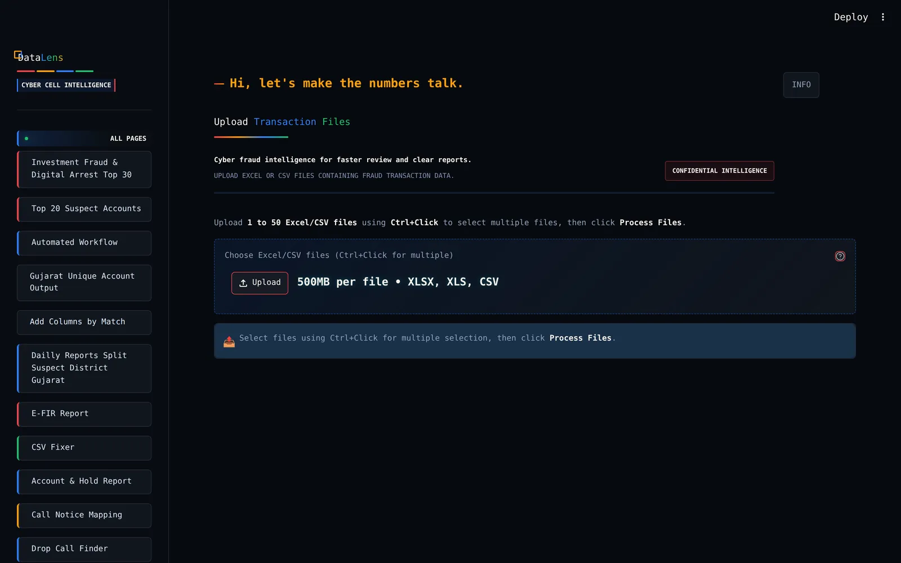

Work — Data platform
DataLens
Fraud analysis & reporting platform for the cyber cell. A 53-module analysis suite that turns fifty raw bank statements into a ranked, court-ready picture of where the money went. Built for investigating officers, in daily use across Gujarat.

- Client
- Cyber Centre of Excellence, Gujarat State
- Role
- Sole developer — architecture, data engineering, UI
- Stack
- Python · Streamlit · pandas · MySQL
- Status
- Live in production
The problem
A cyber fraud complaint arrives as a pile of spreadsheets: one per bank, each with its own column names, its own idea of what a date looks like, and tens of thousands of rows. An officer needs to know which account took the money, how much of it is disputed, which acknowledgement numbers attach to it, and which district the suspect sits in. Doing that by hand takes days, and a single mis-typed account number can lose a case.
What I built
DataLens ingests up to fifty Excel or CSV files in one run and resolves each file’s columns by fuzzy match rather than by fixed template, so a new bank format costs nobody an afternoon. Records are cleaned, validated and normalised, then aggregated by the fraudster’s account number with every acknowledgement number, disputed amount and a computed risk score attached. Around that core sit fifty-odd purpose-built modules — district splitting, call-notice merging, transaction matching, pivot builders, an e-FIR report writer, a CSV repair tool — each one built because an officer asked for it.
Inside it
Fuzzy column detection
RapidFuzz resolves headers at an 80 per cent confidence threshold across the many ways a bank writes “account number”, with confidence scores shown and a manual override for anything ambiguous.
Vectorised processing
Cleaning, currency parsing, account normalisation and validation run as vectorised pandas operations, so files running into millions of rows finish in seconds rather than minutes.
Aggregation and risk scoring
Every transaction is grouped by fraudster account with distinct ACK collection, totals, disputed totals and a risk score derived from transaction count and value.
District-wise matching
Victim and suspect records are matched across all 33 districts of Gujarat, with a dedicated split engine for daily district reports.
Reporting in four formats
Excel, CSV, PDF and audit-log exports, with coloured headers and layouts built to match what the department already files.
Verified database writes
Batched MySQL imports with SHA-256 integrity checks, plus a built-in database viewer for reconciling what actually landed.
Data that does not linger
All processing happens in memory behind a session timeout. No case data is written to the server.
Screens
Captured from the running product, not from a mockup.
Outcome
- Consolidation work that took days of manual spreadsheet handling is completed in a single pass.
- Used by investigating officers across Gujarat as the standard tool for daily fraud reporting.
- Every derived report — district splits, suspect rankings, e-FIR summaries — comes from one validated pipeline instead of five hand-made copies.